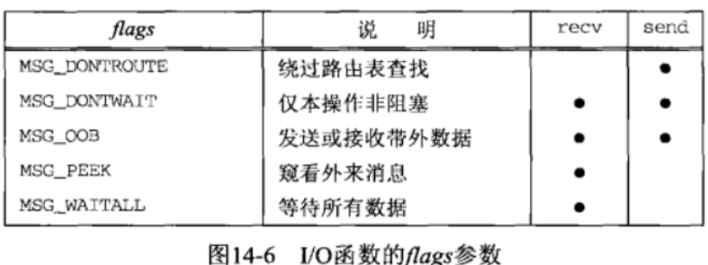
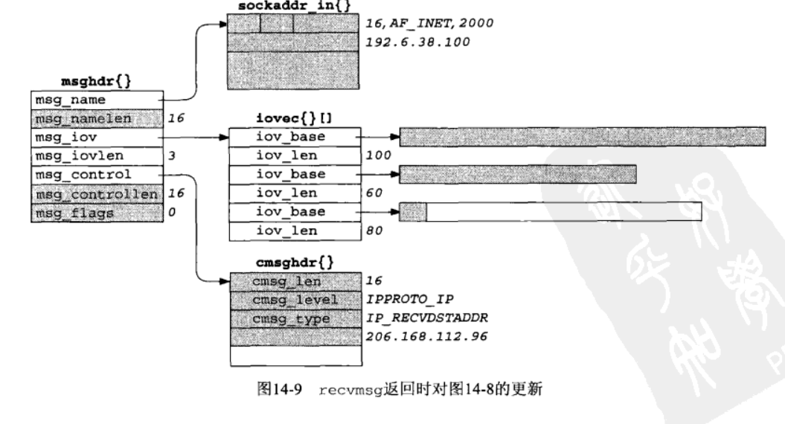
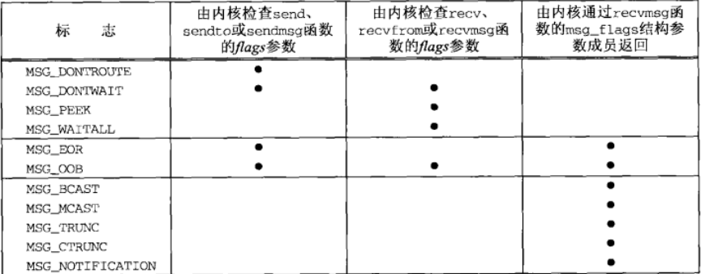
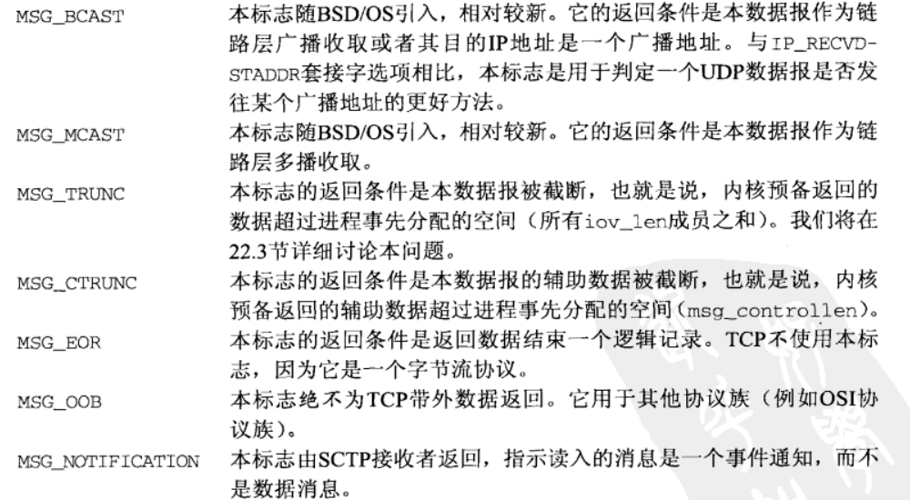
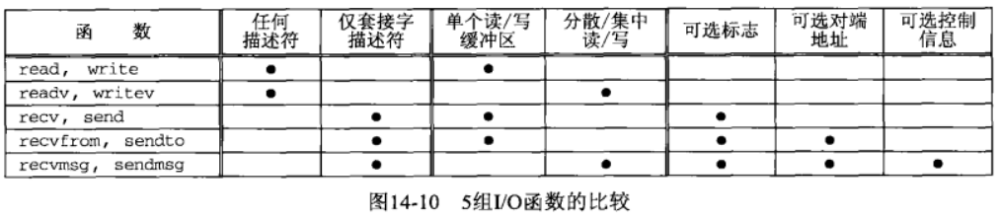
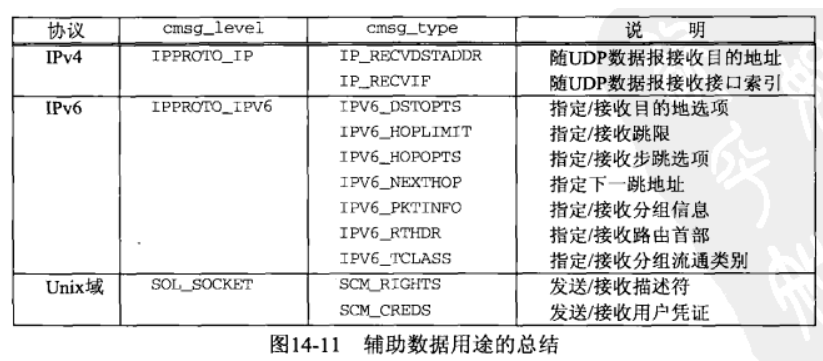
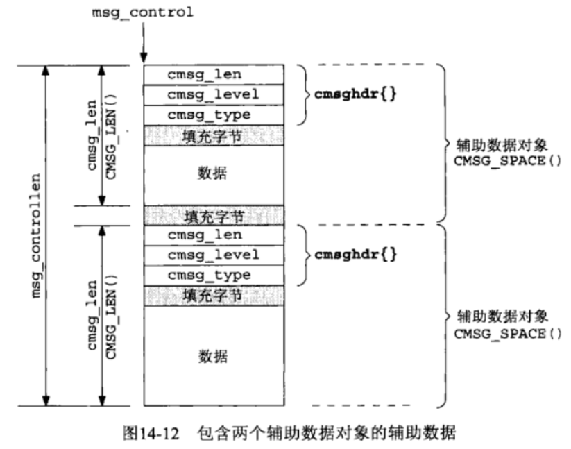
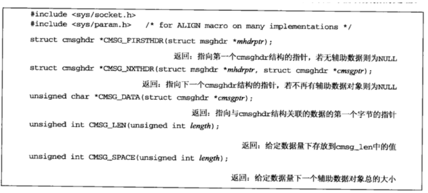

[UNP]:高级IO
1. 套接字超时
在涉及套接字的I/O操作上设置超时的方法有三种
- 使用
alarm() - 使用
select() - 使用套接字选项: SO_RCVTIMEO, SO_SNDTIMEO
1. alarm
接下来使用alarm()为connect()设置超时
1 | |
2. select
接下来使用select()为recvfrom()设置超时
1 | |
3. 套接字选项
使用套接字选项SO_RCVTIMEO为recvfrom()设置超时
1 | |
如果I/O操作超时，那么读取操作(recvfrom())将会返回一个EWOULDBLOCK错误
2. recv(), send()
这两个函数类似于read()与write(), 但是支持更多的flag
recv, send
1
2
3
4#include<sys/socket.h>
/* 返回：成功返回读入写出的字节数，出错返回 -1 */
ssize_t recv(int sockfd, void* buff, size_t nbytes, int flags);
ssize_t send(int sockfd, const void* buff, size_t nbytes, int flags);sockfd
指定描述符
buff
读/写缓冲区
nbytes
缓冲区大小
flags
flags可选值如下

对其中的几个参数稍微解释一下
MSG_DONROUTE
本标志告诉内核目的主机在本地网络上，不需要通过路由表进行查找
MSG_WAITALL
该标志告诉内核不要在尚未读取完请求数目的字节之前就让操作返回
3. readv(), writev()
这两个函数允许单个I/O调用读出或写入多个缓冲区, 这也被称作分散读和集中写
iovec
1
2
3
4struct iovec{
void *iov_base; /* buf 的开始地址 */
size_t iov_len; /* buf 的大小 */
}
readv, writev
1
2
3
4#include<sys/uio.h>
ssize_t readv(int fileds, const struct iovec* iov, int iovcnt);
ssize_t writev(int fields, const struct iovec* iov, int iovcnt);
/* 返回：成功返回读入或写出的字节数，出错返回 -1 */fileds
描述符(文件描述符/套接字描述符)
iov
读取/写入缓冲区数组
iovcnt
数组长度
4. recvmsg(), sendmsg()
这两个函数是最通用的I/O函数，几乎什么都能干
msghdr
1
2
3
4
5
6
7
8
9
10/* msghdr结构 用来保存大部分参数 */
struct msghdr{
void *msg_name;
socklen_t msg_namelen;
struct iovec *msg_iov;
int msg_iovlen;
void *msg_control;
socklen_t msg_controllen;
int msg_flags;
}msg_name
该字段通常只用于未连接UDP套接字，用于存放套接字地址结构
对于
recvmsg()来说, 该字段用于存储发送者的地址结构对于
sendmsg()来说，该字段用于存储接受者的地址结构当该字段不需要(TCP套接字或已连接UDP套接字)时，该字段应该被置为空
msg_namelen
msg_name的长度msg_iov
缓冲区数组
msg_iovlen
缓冲区数组元素个数
msg_control
辅助数据
msg_controllen
msg_control的长度msg_flags
该字段只用于
recvmsg(), 是一个值-结果类型参数传入时
recvmsg()的flags会被复制到其中传出时内核会根据接受到的结果来更新其值
一个典型的
msghdr结构看起来就像这样
recvmsg, sendmsg
1
2
3
4#include<sys/socket.h>
ssize_t recvmsg(int sockfd, struct msghdr * msg, int flags);
ssize_t sendmsg(int sockfd, struct msghdr * msg, int flags);
// 返回：成功读入或者写出的字节数，出错则为 -1sockfd
指定套接字描述符
msg
各种参数集合
flags
标志, 下面是它的总结图

标志解释

5组I/O函数的比较

5. 辅助数据
在struct msghdr结构当中存在辅助数据字段，接下来对其进行介绍
cmsghdr辅助数据由一个或多个辅助数据对象构成，每个对象由一个
cmsghdr结构开头，用于描述该对象的属性1
2
3
4
5
6
7
8#include <sys/socket.h>
struct cmsghdr{
socklen_t cmsg_len;
int cmsg_level;
int cmsg_type;
// 后面紧跟着cmsg_data[]
}cmsg_len
用于指明辅助数据对象的长度
cmsg_level + cmsg_type
这两个字段组合用于用于指明辅助数据的用途

辅助数据示意图

辅助数据有着对其要求，在
cmsghdr与辅助数据之间有着填充字节，在辅助对象之间也有着填充字节
为了屏蔽填充字节的细节，头文件<sys/socket.h>中定义了以下5个宏，用于简化对辅助数据的处理

本博客所有文章除特别声明外，均采用 CC BY-SA 4.0 协议 ，转载请注明出处！